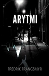
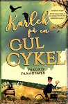

Nils Fredrik Boson Nilsson Frängsmyr
Utbildad systemvetare, författare.
| Född: | 1974-01-28 Åkersberga, Österåkers fs, Vaxholms kn. [1] | Född Tvilling. |
|---|
Noteringar
Fredrik Frängsmyr.
Debuterar med: Thrillern Arytmi (Mörkersdottirs förlag) En berättelse om en livskris som dras alldeles åt helvete för långt. Nästa bok blev: Kärlek på en gul cykel
Bor: Åkersberga
Bakgrund: Utbildad systemvetare vid Stockholms Universitet och Florida Atlantic University. Alltid läst mycket och tyckt om att skriva mail, sms, julklappsrim, handlingslistor, rappakalja, egentligen allt som har med ord att men aldrig gjort kopplingen att det skulle vara kul att skriva en bok innan en vän plötsligt utbrister. Du borde skriva en bok. Så vid 35 års ålder satte jag upp ett 3-boks mål där tanken var att när jag nått min tredje bok borde jag lärt mig tillräckligt mycket för att få ihop något bra nog för att skicka in till förlag.
Intressen: Film, personlig utveckling och träning av olika slag. Jag och min tvillingbror har som mål att lära oss någonting nytt varje termin och har en lista över saker vi ska beta av. I höstas började vi med skateboard och efter det har allting handlat om skate. Det är fantastiskt lätt att slå sig i ramper och på betonggolv och jag har inte haft ont så här mycket någonsin tidigare. Ser fram emot vila nästa år när det är dags för motorcross. 🙂
Läser helst: Något av Chuck Palahniuk, Neil Gaiman, William Gibson, Lee Child eller vilken bok som helst där jag kan lära mig något om mig själv.
Bidrag till Debutantbloggen: Tips och tricks för skrivande, hur man gör skrivandet till en del av sin personliga utveckling och att hitta tid för skrivande bland heltidsjobb och familjemys.
Följ mig på: www.frangsmyr.se/
Personhistoria
| Årtal | Ålder | Händelse |
|---|
| 1974 |
|
Födelse 1974-01-28 Åkersberga, Österåkers fs, Vaxholms kn [1] |
| 1974 |
|
Systern Bo Johan Boson Nilsson föds 1974-01-28 Åkersberga, Österåker fs, Vaxholms kn [1] |
Dokument
Källor
| [1] | Mtl Stockholm län 1981 |
| |
|
|
| Fredrik Frängsmyr |
| |
|  |
2016-09. Arytmi
av Fredrik Frängsmyr
ISBN: 9789185701506
www.adlibris.com/se/bok/arytmi-9789185701506
|
| |
|  |
2017-06. Kärlek på en gul cykel, 2017-06
av Fredrik Frängsmyr
ISBN: 9789185701865
Tänk om en helt vanlig dag på jobbet förvandlades till ett stort fantastiskt äventyr. Som för Vincent. När han vaknade imorse pekade allting på att det här skulle bli ännu en helt vanlig dag. Men det var innan han blev inkallad till chefen för en varning. Innan han märkte att de stora svarta fåglarna följde honom överallt. Innan han hörde talas om det som hände vid kanalen igår och framförallt, innan han fick reda på att han var jagad av Hurricane.
Mer och mer saker pekar på att någonting ovanligt hänt honom under natten men han kan inte för sitt liv komma ihåg vad. De enda ledtrådarna han har är ett vykort och ett avlägset minne av att kanske har träffat sitt livs kärlek. Vincent kastas från att sortera gummisnoddar och leverera vykort till att göra allt som står i hans makt för att överleva dagen ut.
Kärlek på en gul cykel är en posttraumatisk kärlekshistoria där varje stopp på Vincents rutt levererar mer frågor än brev. Vincents historia är full av humor, faror, mysterier och såklart, din dagliga post.
www.adlibris.com/se/bok/karlek-pa-en-gul-cykel-9789185701865
|
|
{kind=link}
{kind=link}
{kind=link}